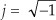
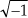
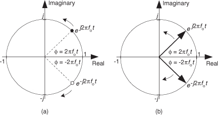
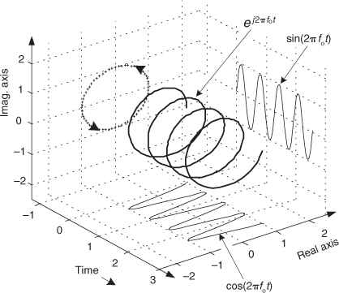
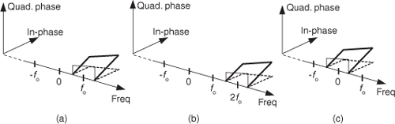
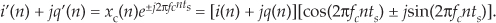

8 Quadrature Signals
Quadrature signals are based on the notion of complex numbers. Perhaps no other topic causes more heartache for newcomers to DSP than these numbers and their strange terminology of j-operator, complex, analytic, imaginary, real, and orthogonal. If you’re a little unsure of the physical meaning of complex numbers and the  operator, don’t feel bad because you’re in good company. Sixteenth-century Italian mathematician Girolamo Cardano described an imaginary number “as subtle as it is useless.” In the seventeenth century Gottfried Leibniz described imaginary numbers as being “amphibian, halfway between existence and nonexistence.” (The term imaginary was first used by the brilliant mathematician/philosopher René Descartes in the seventeenth century and was meant to be derogatory. That’s because not only was the notion of the square root of a negative number dubious at best, surprisingly there was no consensus at that time as to the true meaning of negative real numbers.) Even Karl Gauss, one the world’s greatest mathematicians, called the j-operator the “shadow of shadows.” Here we’ll shine some light on that shadow so you’ll never have to call the Quadrature Psychic Hotline for help.
Quadrature signals, represented by complex numbers, are used in just about every field of science and engineering.† Quadrature signals are of interest to us because they describe the effects of Fourier analysis as well as the quadrature processing and implementations that take place in modern digital communications systems. In this chapter we’ll review the fundamentals of complex numbers and get comfortable with how they’re used to represent quadrature signals. Next we’ll examine the notion of negative frequency as it relates to quadrature signal algebraic notation and learn to speak the language of quadrature processing. In addition, we’ll use three-dimensional time- and frequency-domain plots to clarify and give physical meaning to quadrature signals.
† That’s because complex sinusoids are solutions to those second-order linear differential equations used to describe so much of nature.
8.1 Why Care about Quadrature Signals?
Quadrature signal formats, also called complex signals, are used in many digital signal processing applications, such as
• digital communications systems,
• radar systems,
• time difference of arrival processing in radio direction-finding schemes,
• coherent pulse measurement systems,
• antenna beamforming applications, and
• single sideband modulators.
These applications fall into the general category known as quadrature processing, and they provide additional processing power through the coherent measurement of the phase of sinusoidal signals.
A quadrature signal is a two-dimensional signal whose value at some instant in time can be specified by a single complex number having two parts: what we call the real part and the imaginary part. (The words real and imaginary, although traditional, are unfortunate because of their meanings in our everyday speech. Communications engineers use the terms in-phase and quadrature phase. More on that later.) Let’s review the mathematical notation of these complex numbers.
8.2 The Notation of Complex Numbers
To establish our terminology, we define real numbers to be those numbers we use in everyday life, like a voltage, a temperature on the Fahrenheit scale, or the balance of your checking account. These one-dimensional numbers can be either positive or negative, as depicted in Figure 8-1(a). In that figure we show a one-dimensional axis and say a single real number can be represented by a point on the axis. Out of tradition, let’s call this axis the real axis.
Figure 8-1 Graphical interpretations: (a) a real number; (b) a complex number.
A complex number c is shown in Figure 8-1(b) where it’s also represented as a point. Complex numbers are not restricted to lying on a one-dimensional line but can reside anywhere on a two-dimensional plane. That plane is called the complex plane (some mathematicians like to call it an Argand diagram), and it enables us to represent complex numbers having both real and imaginary parts. For example, in Figure 8-1(b), the complex number c = 2.5 + j2 is a point lying on the complex plane on neither the real nor the imaginary axis. We locate point c by going +2.5 units along the real axis and up +2 units along the imaginary axis. Think of those real and imaginary axes exactly as you think of the east-west and north-south directions on a road map.
We’ll use a geometric viewpoint to help us understand some of the arithmetic of complex numbers. Taking a look at Figure 8-2, we can use the trigonometry of right triangles to define several different ways of representing the complex number c.
Figure 8-2 The phasor representation of complex number c = a + jb on the complex plane.
Our complex number c is represented in a number of different ways in the literature, as shown in Table 8-1.
Table 8-1 Complex Number Notation
Eqs. (8-3) and (8-4) remind us that c can also be considered the tip of a phasor on the complex plane, with magnitude M, in the direction of ø degrees relative to the positive real axis as shown in Figure 8-2. Keep in mind that c is a complex number and the variables a, b, M, and ø are all real numbers. The magnitude of c, sometimes called the modulus of c, is
The phase angle ø, the argument of c, is the arctangent of the ratio of the imaginary part over the real part, or
If we set Eq. (8-3) equal to Eq. (8-2), Mejø = M[cos(ø) + jsin(ø)], we can state what’s named in his honor and now called one of Euler’s identities as
The suspicious reader should now be asking, “Why is it valid to represent a complex number using that strange expression of the base of the natural logarithms, e, raised to an imaginary power?” We can validate Eq. (8-7) as did Europe’s wizard of infinite series, Leonhard Euler, by plugging jø in for z in the series expansion definition of ez in the top line of Figure 8-3.† That substitution is shown on the second line. Next we evaluate the higher orders of j to arrive at the series in the third line in the figure. Those of you with elevated math skills like Euler (or who check some math reference book) will recognize that the alternating terms in the third line are the series expansion definitions of the cosine and sine functions.
† Leonhard Euler, born in Switzerland in 1707, is considered by many historians to be the world’s greatest mathematician. By the way, the name Euler is pronounced ‘oy-ler.
Figure 8-3 One derivation of Euler’s equation using series expansions for ez, cos(ø), and sin(ø).
Figure 8-3 verifies Eq. (8-7) and justifies our representation of a complex number using the Eq. (8-3) polar form: Mejø. If we substitute –jø for z in the top line of Figure 8-3, we end up with a slightly different, and very useful, form of Euler’s identity:
The polar form of Eqs. (8-7) and (8-8) benefits us because:
• It simplifies mathematical derivations and analysis, turning trigonometric equations into the simple algebra of exponents. Math operations on complex numbers follow exactly the same rules as real numbers.
• It makes adding signals merely the addition of complex numbers (vector addition).
• It’s the most concise notation.
• It’s indicative of how digital communications system are implemented and described in the literature.
Here’s a quick example of how the polar form of complex numbers can simplify a mathematical analysis. Let’s say we wanted to understand the process of multiplying complex number c1 = cos(ø) + jsin(ø) by another complex number, c2 = cos(2ø) – jsin(2ø), whose angle is the negative of twice c1’s angle. The product is
Using the trigonometric function product identities, we can write Eq. (8-9) as
So the c1c2 product yields the complex conjugate of c1. That’s not too thrilling, but what is interesting is how trivial a polar form c1c2 product analysis turns out to be. We can complete our polar form analysis in one brief line:
which is equivalent to Eq. (8-10). For math analysis, polar form is usually the notation of choice.
Back to quadrature signals. We’ll be using Eqs. (8-7) and (8-8) to understand the nature of time-domain quadrature signals. But first let’s take a deep breath and enter the Twilight Zone of the j operator.
You’ve seen the definition before. Stated in words, we say that j represents a number that when multiplied by itself results in negative one. Well, this definition causes difficulty for the beginner because we all know that any number multiplied by itself always results in a positive number. (Unfortunately, engineering textbooks often define j and then, with justified haste, swiftly carry on with all the ways the j operator can be used to analyze sinusoidal signals. Readers soon forget about the question “What does actually mean?”) Well,  had been on the mathematical scene for some time but wasn’t taken seriously until it had to be used to solve cubic polynomial equations in the sixteenth century[1,2]. Mathematicians reluctantly began to accept the abstract concept of without having to visualize it, because its mathematical properties were consistent with the arithmetic of normal real numbers.
It was Euler’s equating complex numbers to real sines and cosines, and Gauss’s brilliant introduction of the complex plane, that finally legitimized the notion of to Europe’s mathematicians in the eighteenth century. Euler, going beyond the province of real numbers, showed that complex numbers had a clean, consistent relationship to the well-known real trigonometric functions of sines and cosines. As Einstein showed the equivalence of mass and energy, Euler showed the equivalence of real sines and cosines to complex numbers. Just as modern-day physicists don’t know what an electron is but they understand its properties, we’ll not worry about what j is and be satisfied with understanding its behavior. We’ll treat j not as a number, but as an operation performed on a number, as we do with negation or multiplication. For our purposes, the j-operator means rotate a complex number by 90 degrees counterclockwise. (For our friends in the UK, counterclockwise means your anti-clockwise.) Let’s see why.
We’ll get comfortable with the complex plane representation of imaginary numbers by examining the mathematical properties of the operator as shown in Figure 8-4.
Figure 8-4 What happens to the real number 8 when multiplied by j and –j.
Multiplying any number on the real axis by j results in an imaginary product lying on the imaginary axis. The example on the left in Figure 8-4 shows that if +8 is represented by the dot lying on the positive real axis, multiplying +8 by j results in an imaginary number, +j8, whose position has been rotated 90 degrees counterclockwise (from +8), putting it on the positive imaginary axis. Similarly, multiplying +j8 by j results in another 90-degree rotation, yielding the –8 lying on the negative real axis because j2 = –1. Multiplying –8 by j results in a further 90-degree rotation, giving the –j8 lying on the negative imaginary axis. Whenever any number represented by a dot is multiplied by j, the result is a counterclockwise rotation of 90 degrees. (Conversely, multiplication by –j results in a clockwise rotation of –90 degrees on the complex plane.)
If we let ø = π/2 in Eq. 8-7, we can say
Here’s the point to remember. If you have a single complex number, represented by a point on the complex plane, multiplying that number by j or by ejπ/2 will result in a new complex number rotated 90 degrees counterclockwise (CCW) on the complex plane. Don’t forget this, as it will be useful as you begin reading the literature of quadrature processing systems!
Let’s pause for a moment here to catch our breath. Don’t worry if the ideas of imaginary numbers and the complex plane seem a little mysterious. It’s that way for everyone at first—you’ll get comfortable with them the more you use them. (Remember, the j-operator puzzled Europe’s heavyweight mathematicians for many years.) Granted, not only is the mathematics of complex numbers a bit strange at first, but the terminology is almost bizarre. While the term imaginary is an unfortunate one to use, the term complex is downright weird. When first encountered, the phrase “complex numbers” makes us think complicated numbers. This is regrettable because the concept of complex numbers is not really so complicated.† Just know that the purpose of the above mathematical rigmarole was to validate Eqs. (8-2), (8-3), (8-7), and (8-8). Now, let’s (finally!) talk about time-domain signals.
† The brilliant American engineer Charles P. Steinmetz, who pioneered the use of real and imaginary numbers in electrical circuit analysis in the early twentieth century, refrained from using the term complex numbers—he called them general numbers.
8.3 Representing Real Signals Using Complex Phasors
We now turn our attention to a complex number that is a function of time. Consider a number whose magnitude is one, and whose phase angle increases with time. That complex number is the ej2πfot point shown in Figure 8-5(a). (Here the 2πfo term is frequency in radians/second, and it corresponds to a frequency of fo cycles/second where fo is measured in Hz.) As time t gets larger, the complex number’s phase angle increases and our number orbits the origin of the complex plane in a CCW direction. Figure 8-5(a) shows the number, represented by the solid dot, frozen at some arbitrary instant in time. If, say, the frequency fo = 2 Hz, then the dot would rotate around the circle two times per second. We can also think of another complex number e–j2πfot (the white dot) orbiting in a clockwise direction because its phase angle gets more negative as time increases.
Figure 8-5 A snapshot, in time, of two complex numbers whose exponents change with time: (a) numbers shown as dots; (b) numbers shown as phasors.

Let’s now call our two complex expressions, ej2πfot and e–j2πfot, quadrature signals. Each has both real and imaginary parts, and they are both functions of time. Those ej2πfot and e–j2πfot expressions are often called complex exponentials in the literature.
We can also think of those two quadrature signals, ej2πfot and e–j2πfot, as the tips of two phasors rotating in opposite directions, as shown in Figure 8-5(b). We’re going to stick with this phasor notation for now because it’ll allow us to achieve our goal of representing real sinusoids in the context of the complex plane. Don’t touch that dial!
To ensure that we understand the behavior of a simple quadrature signal, Figure 8-6 shows the three-dimensional path of the ej2πfot signal as time passes. We’ve added the time axis, coming out of the page, to show how ej2πfot follows a corkscrew path spiraling along, and centered about, the time axis. The real and imaginary parts of ej2πfot are shown as the sine and cosine projections in Figure 8-6 and give us additional insight into Eq. 8-7.
Figure 8-6 The motion of the ej2πfot complex signal as time increases.

To appreciate the physical meaning of our discussion here, let’s remember that a continuous quadrature signal ej2πfot = cos(2πfot) + jsin(2πfot) is not just mathematical mumbo jumbo. We can generate ej2πfot in our laboratory and transmit it to another lab down the hall. All we need is two sinusoidal signal generators, set to the same frequency fo. (However, somehow we have to synchronize those two hardware generators so their relative phase shift is fixed at 90 degrees.) Next we connect coax cables to the generators’ output connectors and run those two cables, labeled cos for the cosine signal and sin for the sinewave signal, to their destination as shown in Figure 8-7.
Figure 8-7 Displaying a quadrature signal using an oscilloscope.
Now for a two-question pop quiz. First question: In the other lab, what would we see on the screen of an oscilloscope if the continuous real cos(2πfot) and sin(2πfot) signals were connected to the horizontal and vertical input channels, respectively, of the scope (remembering, of course, to set the scope’s horizontal sweep control to the External position)? That’s right. We’d see the scope’s electron beam rotating counterclockwise in a circle on the scope’s screen.
Next, what would be seen on the scope’s display if the cables were mislabeled and the two signals were inadvertently swapped? We’d see another circle, but this time it would be orbiting in a clockwise direction. This would be a neat little real-world demonstration if we set the signal generators’ fo frequencies to, say, 1 Hz.
This oscilloscope example is meaningful and helps us answer the important question “When we work with quadrature signals, how is the j-operator implemented in hardware?” The j-operator is implemented by how we treat the two signals relative to each other. We have to treat them orthogonally such that the real cos(2πfot) signal represents an east-west value, and the real sin(2πfot) signal represents an orthogonal north-south value. (By “orthogonal,” I mean the north-south direction is oriented exactly 90 degrees relative to the east-west direction.) So in our oscilloscope example the j-operator is implemented merely by how the connections are made to the scope. The real cosine signal controls horizontal deflection and the real sine signal controls vertical deflection. The result is a two-dimensional quadrature signal represented by the instantaneous position of the dot on the scope’s display. We physically implemented the j-operator in ej2πfot = cos(2πfot) + jsin(2πfot) the moment we connected the sin(2πfot) signal to the vertical input connector of the oscilloscope. Our Figure 8-7 example reminds us of an important characteristic of quadrature signals: While real signals can be transmitted over a single cable, two cables are always necessary to transmit a quadrature (complex) signal.
Returning to Figure 8-5(b), ask yourself: “What’s the vector sum of those two phasors as they rotate in opposite directions?” Think about this for a moment. That’s right, the phasors’ real parts will always add constructively, and their imaginary parts will always cancel. This means the summation of these ej2πfot and e–j2πfot phasors will always be a purely real number. Implementations of modern-day digital communications systems are based on this property!
To emphasize the importance of the real sum of these two complex sinusoids we’ll draw yet another picture. Consider the waveform in the three-dimensional Figure 8-8 generated by the sum of two half-magnitude complex phasors, ej2πfot/2 and e–j2πfot/2, rotating in opposite directions about, and moving down along, the time axis.
Figure 8-8 A cosine represented by the sum of two rotating complex phasors.
Thinking about these phasors, it’s clear now why the cosine wave can be equated to the sum of two complex exponentials by
Eq. (8-13), a well-known and important expression, is also one of Euler’s identities. We could have derived this identity by solving Eqs. (8-7) and (8-8) for jsin(ø), equating those two expressions, and solving that final equation for cos(ø). Similarly, we could go through the same algebra exercise and show a real sinewave as also the sum of two complex exponentials as
Look at Eqs. (8-13) and (8-14) carefully—they are the standard expressions for a cosine wave and a sinewave, using complex notation, and are seen throughout the literature of quadrature communications systems. Equation (8-13) tells us that the two complex exponentials are both oriented toward the positive real axis when time t = 0. The j operators in Eq. (8-14) tell us that the negative-frequency complex exponential is oriented along the positive imaginary axis, and the positive-frequency complex exponential is oriented along the negative imaginary axis, when time t = 0.
To keep the reader’s mind from spinning like those complex phasors, please realize that the sole purpose of Figures 8-5 through 8-8 is to validate the complex expressions of the cosine and sinewave given in Eqs. (8-13) and (8-14). Those two equations, along with Eqs. (8-7) and (8-8), are the Rosetta Stone of quadrature signal processing.† We can now easily translate, back and forth, between real sinusoids and complex exponentials.
† The Rosetta Stone was a basalt slab found in Egypt in 1799. It had the same text written in three languages, two of them being Greek and Egyptian hieroglyphs. This enabled scholars to, finally, translate the ancient hieroglyphs.
Let’s step back now and remind ourselves what we’re doing. We are learning how real signals that can be transmitted down a coax cable, or digitized and stored in a computer’s memory, can be represented in complex number notation. Yes, the constituent parts of a complex number are each real, but we’re treating those parts in a special way—we’re treating them in quadrature.
8.4 A Few Thoughts on Negative Frequency
It’s important for us to be comfortable with the concept of negative frequency because it’s essential in understanding the spectral replication effects of periodic sampling, discrete Fourier transforms, and the various quadrature signal processing techniques discussed in Chapter 9. The convention of negative frequency serves as both a consistent and powerful mathematical tool in our analysis of signals. In fact, the use of negative frequency is mandatory when we represent real signals, such as a sine or cosine wave, in complex notation.
The difficulty in grasping the idea of negative frequency may be, for some, similar to the consternation felt in the parlors of mathematicians in the Middle Ages when they first encountered negative numbers. Until the thirteenth century, negative numbers were considered fictitious because numbers were normally used for counting and measuring. So up to that time, negative numbers just didn’t make sense. In those days, it was valid to ask, “How can you hold in your hand something that is less than nothing?” The idea of subtracting six from four must have seemed meaningless. Math historians suggest that negative numbers were first analyzed in Italy. As the story goes, around the year 1200 the Italian mathematician Leonardo da Pisa (known as Fibonacci) was working on a financial problem whose only valid solution involved a negative number. Undaunted, Leo wrote, “This problem, I have shown to be insoluble unless it is conceded that the first man had a debt.” Thus negative numbers arrived on the mathematics scene, never again to be disregarded.
Modern men and women can now appreciate that negative numbers have a direction associated with them. The direction is backward from zero in the context that positive numbers point forward from zero. For example, negative numbers can represent temperatures measured in degrees below zero, minutes before the present if the present is considered as zero time, or money we owe the tax collector when our income is considered positive dollars. So, the notion of negative quantities is perfectly valid if we just define it properly. As comfortable as we now are with negative numbers, negative frequency remains a troublesome and controversial concept for many engineers[3,4]. This author once encountered a paper in a technical journal which stated: “since negative frequencies cannot exist—.” Well, like negative numbers, negative frequency is a perfectly valid concept as long as we define it properly relative to what we’re used to thinking of as positive frequency. With this thought in mind, we’ll call Figure 8-5’s ej2πfot signal a positive-frequency complex exponential because it rotates around the complex plane’s origin in a circle in a positive-angle direction at a cyclic frequency of fo cycles per second. Likewise, we’ll refer to the e–j2πfot signal as a negative-frequency complex exponential because of its negative-angle direction of rotation.
So we’ve defined negative frequency in the frequency domain. If my DSP pals want to claim negative frequency doesn’t exist in the time domain, I won’t argue. However, our frequency-domain negative frequency definition is clean, consistent with real signals, very useful, and here to stay.
8.5 Quadrature Signals in the Frequency Domain
Now that we know much about the time-domain nature of quadrature signals, we’re ready to look at their frequency-domain descriptions. We’ll illustrate the full three-dimensional aspects of the frequency domain so none of the phase relationships of our quadrature signals will be hidden from view. Figure 8-9 tells us the rules for representing complex exponentials in the frequency domain.
Figure 8-9 Frequency-domain interpretation of complex exponentials.
We’ll represent a single complex exponential as a narrow impulse located at the frequency specified in the exponent. In addition, we’ll show the phase relationships between those complex exponentials along the real and imaginary frequency-domain axes. To illustrate those phase relationships, a complex frequency domain representation is necessary. With all this said, take a look at Figure 8-10.
Figure 8-10 Complex time- and frequency-domain representations: (a) cosine wave; (b) a sinewave.
See how a real cosine wave and a real sinewave are depicted in our complex frequency-domain representation on the right side of Figure 8-10. Those bold arrows on the right of Figure 8-10 are not rotating phasors but are frequency-domain impulse symbols indicating a single spectral line for a single complex exponential such as ej2πfot. The directions in which the spectral impulses are pointing merely indicate the relative phases of the spectral components. The amplitude of those spectral impulses is 1/2. Notice how the spectrum of cos(2πfot) is real-only. That’s because cos(2πfot) is an even function in time, its value at negative time t is equal to its value at positive time t, or
The sin(2πfot) function, on the other hand, has an imaginary-only spectrum because it’s an odd function. An odd function’s value at negative time t is equal to the negative of its value at positive time t, or
Why are we bothering with this three-dimensional frequency-domain representation? Because it’s the tool we’ll use to understand the generation (modulation) and detection (demodulation) of quadrature signals in digital (and some analog) communications systems, and that’s one of the goals of this chapter. Before we go there, however, let’s validate this frequency-domain representation with a little example.
Figure 8-11 is a straightforward example of how we use the complex frequency domain. There we begin with a real sinewave, multiply it by j, and then add it to a real cosine wave of the same frequency. The result is the single complex exponential ej2πfot, illustrating graphically Euler’s identity that we stated mathematically in Eq. (8-7).
Figure 8-11 Complex frequency-domain view of Euler’s ej2πfot = cos(2πfot) + jsin(2πfot).
On the frequency axis, the notion of negative frequency is seen as those spectral impulses located at –2πfo radians/second on the frequency axis. This figure shows the big payoff: when we use complex notation, generic complex exponentials like ej2πft and e–j2πft are the fundamental constituents of the real sinusoids sin(2πft) or cos(2πft). That’s because both sin(2πft) and cos(2πft) are made up of ej2πft and e–j2πft components. If you were to take the discrete Fourier transform (DFT) of discrete time-domain samples of a sin(2πfot) sinewave, a cos(2πfot) cosine wave, or an ej2πfot complex sinusoid and plot the complex results, you’d get exactly the narrow frequency-domain impulses in Figure 8-11.
If you understand the notation and operations in Figure 8-11, pat yourself on the back, because you now know a great deal about the nature and mathematics of quadrature signals.
8.6 Bandpass Quadrature Signals in the Frequency Domain
In quadrature processing, by convention, the real part of the spectrum is called the in-phase component and the imaginary part of the spectrum is called the quadrature component. The signals whose complex spectra are in Figures 8-12(a), 8-12(b), and 8-12(c) are real, and in the time domain they can be represented by amplitude values having nonzero real parts and zero-valued imaginary parts. We’re not forced to use complex notation to represent them in the time domain—the signals are real-only.
Figure 8-12 Quadrature representation of signals: (a) real sinusoid cos(2πfot + ø); (b) real bandpass signal containing six sinusoids over bandwidth B; (c) real bandpass signal containing an infinite number of sinusoids over bandwidth B Hz; (d) complex bandpass signal of bandwidth B Hz.
Real signals always have positive- and negative-frequency-spectral components. For any real signal, the positive- and negative-frequency components of its in-phase (real) spectrum always have even symmetry around the zero-frequency point. That is, the in-phase part’s positive- and negative-frequency components are mirror images of each other. Conversely, the positive- and negative-frequency components of its quadrature (imaginary) spectrum are always negatives of each other. This means that the phase angle of any given positive quadrature frequency component is the negative of the phase angle of the corresponding negative quadrature frequency component as shown by the thin solid arrows in Figure 8-12(a). This conjugate symmetry is the invariant nature of real signals and is obvious when their spectra are represented using complex notation.
A complex-valued time signal, whose spectrum can be that in Figure 8-12(d), is not restricted to the above spectral conjugate symmetry conditions. We’ll call that special complex signal an analytic signal, signifying that it has no negative-frequency spectral components.
Let’s remind ourselves again: those bold arrows in Figures 8-12(a) and 8-12(b) are not rotating phasors. They’re frequency-domain impulses indicating a single complex exponential ej2πft. The directions in which the impulses are pointing show the relative phases of the spectral components.
There’s an important principle to keep in mind before we continue. Multiplying a time signal by the complex exponential ej2πfot, what we call quadrature mixing (also called complex mixing), shifts a signal’s spectrum upward in frequency by fo Hz, as shown in Figures 8-13(a) and 8-13(b). Likewise, multiplying a time signal by e–j2πfot (also called complex down-conversion or mixing to baseband) shifts a signal’s spectrum down to a center frequency of zero Hz as shown in Figure 8-13(c). The process of quadrature mixing is used in many DSP applications as well as most modern-day digital communications systems.
Figure 8-13 Quadrature mixing of a bandpass signal: (a) spectrum of a complex signal x(t); (b) spectrum of x(t)ej2πfot; (c) spectrum of x(t)e–j2πfot.

Our entire quadrature signals discussion, thus far, has been based on continuous signals, but the principles described here apply equally well to discrete-time signals. Let’s look at the effect of complex down-conversion of a discrete signal’s spectrum.
8.7 Complex Down-Conversion
Complex down-conversion (also called quadrature demodulation) of discrete signals is a straightforward process and is best described by an example. Think of a real-valued discrete sequence x(n) having an |X(m)| spectral magnitude whose nonzero-valued samples are shown as the solid dots in Figure 8-14(a). Because of the periodicity of discrete spectral representations we discussed in Sections 2.1 and 3.17 (as well as the frequency axis of the FFT lying on the unit circle in the z-plane explained in Section 6.3), we’re justified in also representing the |X(m)| spectrum as the three-dimensional circular plot given in Figure 8-14(b). There we’ve wrapped the linear frequency axis of Figure 8-14(a) around a circle whose perimeter length is equal to the sample rate fs such that the frequencies fs/2 and –fs/2 are the same point on the circular axis.
Figure 8-14 Discrete |X(m)| spectra of a real-valued time sequence: (a) traditional depiction; (b) circular frequency axis depiction.
With x(n) being an N-point real sequence, |X(m)|’s spectrum is symmetrical about the zero-frequency point. If we now perform complex down-conversion (by multiplying x(n) by e–j2πfcnts, where ts = 1/fs, using either equivalent scheme shown in Figure 8-15(a)), the result is the complex sequence
Figure 8-15 Discrete |Xc(m)| spectra of a down-converted time sequence: (a) down-conversion symbols; (b) traditional frequency axis depiction; (c) circular frequency axis depiction.
whose spectrum is given in Figure 8-15(b).
The minus sign in the exponent of e–j2πfcnts shifts the |X(m)| spectrum fc Hz in the negative-frequency direction. Of course, because xc(n) is complex, there’s no symmetry about the zero-frequency point in |Xc(m)|. The circular depiction of |Xc(m)| is provided in Figure 8-15(c).
The purpose of Figures 8-14 and 8-15 is to show how frequency translation by means of complex down-conversion causes spectral components to wrap around the fs/2 point.
Figure 8-15(a) showed the method of down-converting a real x(n) time sequence. For completeness, Figure 8-16 shows how translating a complex time sequence xc(n) = i(n) + jq(n) up or down by fc Hz requires a complex multiplier.
Figure 8-16 Complex multiplier used for up/down-conversion.
This complex multiplier computes

If you use this multiplier, don’t forget the minus sign at the top adder in Figure 8-16. (It’s an easy mistake to make. Believe me.)
8.8 A Complex Down-Conversion Example
We can use all we’ve learned so far about quadrature signals by exploring the process of quadrature sampling. Quadrature sampling is the process of digitizing a continuous (analog) bandpass signal and down-converting its spectrum to be centered at zero Hz. Let’s see how this popular process works by thinking of a continuous bandpass signal, of bandwidth B, centered about a carrier frequency of fc Hz as shown in Figure 8-17(a).
Figure 8-17 The “before and after” spectra of a quadrature-sampled signal.
Our goal in quadrature sampling is to obtain a digitized version of the analog bandpass signal, but we want the digitized signal’s discrete spectrum centered about zero Hz, not fc Hz, as in Figure 8-17(b). That is, we want to mix a time signal with e–j2πfct to perform complex down-conversion. The frequency fs is the digitizer’s sampling rate in samples/second. We show replicated spectra in Figure 8-17(b) to remind ourselves of this effect when A/D conversion takes place.
We can solve our sampling problem with the quadrature sampling block diagram (also known as I/Q demodulation) shown in Figure 8-18(a). That arrangement of two sinusoidal oscillators, with their relative 90-degree phase, is often called a quadrature oscillator. First we’ll investigate the in-phase (upper) path of the quadrature sampler. With the input analog xbp(t)’s spectrum shown in Figure 8-18(b), the spectral output of the top mixer is provided in Figure 8-18(c).
Figure 8-18 Quadrature sampling: (a) block diagram; (b) input spectrum; (c) in-phase mixer output spectrum; (d) in-phase filter output spectrum.
Those ej2πfct and e–j2πfct terms in Figure 8-18 remind us, from Eq. (8-13), that the constituent complex exponentials comprise a real cosine duplicate and translate each part of |Xbp(f)|’s spectrum to produce the |Xi(f)| spectrum. There is a magnitude loss of a factor of two in |Xi(f)|, but we’re not concerned about that at this point. Figure 8-18(d) shows the output of the lowpass filter (LPF) in the in-phase path.
Likewise, Figure 8-19 shows how we get the filtered continuous quadrature-phase portion (bottom path) of our desired complex signal by mixing xbp(t) with –sin(2πfct). From Eq. (8-14) we know that the complex exponentials comprising the real –sin(2πfct) sinewave are ej2πfct and –e–j2πfct. The minus sign in the –e–j2πfct term accounts for the down-converted spectra in |Xq(f)| being 180 degrees out of phase with the up-converted spectra.
Figure 8-19 Spectra within the quadrature phase (lower) signal path of the block diagram.
This depiction of quadrature sampling can be enhanced if we look at the situation from a three-dimensional standpoint, as in Figure 8-20. There the +j factor rotates the “imaginary-only” Q(f) by 90 degrees, making it “real-only.” This jQ(f) is then added to I(f) to yield the spectrum of a complex continuous signal x(t) = i(t) + jq(t). Applying this signal to two A/D converters gives our final desired discrete time samples of xc(n) = i(n) + jq(n) in Figure 8-18(a) having the spectrum shown in Figure 8-17(b).
Figure 8-20 Three-dimensional view of combining the I(f) and Q(f) spectra to obtain the I(f) +jQ(f) spectra.
Some advantages of this quadrature sampling scheme are:
• Each A/D converter operates at half the sampling rate of standard real-signal sampling.
• In many hardware implementations, operating at lower clock rates saves power.
• For a given fs sampling rate, we can capture wider-band analog signals.
• Quadrature sequences make FFT processing more efficient due to a wider frequency range coverage.
• Quadrature sampling also makes it easier to measure the instantaneous magnitude and phase of a signal during demodulation.
• Knowing the instantaneous phase of signals enables coherent processing.
While the quadrature sampler in Figure 8-18(a) performed complex down-conversion, it’s easy to implement complex up-conversion by merely conjugating the xc(n) sequence, effectively inverting xc(n)’s spectrum about zero Hz, as shown in Figure 8-21.
Figure 8-21 Using conjugation to control spectral orientation.
8.9 An Alternate Down-Conversion Method
The quadrature sampling method of complex down-conversion in Figure 8-18(a) works perfectly on paper, but it’s difficult to maintain the necessary exact 90-degree phase relationships with high-frequency, or wideband, signals in practice. One- or two-degree phase errors are common in the laboratory. Ideally, we’d need perfectly phase-matched coax cables, two oscillators exactly 90 degrees out of phase, two ideal mixers with identical behavior and no DC output component, two analog lowpass filters with identical magnitude and phase characteristics, and two A/D converters with exactly identical performance. (Sadly, no such electronic components are available to us.) Fortunately, there’s an easier-to-implement quadrature sampling method[5].
Consider the process shown in Figure 8-22, where the analog xbp(t) signal is initially digitized with the follow-on mixing and filtering being performed digitally. This quadrature sampling with digital mixing method mitigates the problems with the Figure 8-18(a) quadrature sampling method and eliminates one of the A/D converters.
Figure 8-22 Quadrature sampling with digital mixing method.

We use Figure 8-23 to show the spectra of the in-phase path of this quadrature sampling with digital mixing process. Notice the similarity between the continuous |I(f)| in Figure 8-18(d) and the discrete |I(m)| in Figure 8-23(d). A sweet feature of this process is that with fc = fs/4, the cosine and sine oscillator outputs are the repetitive four-element cos(πn/2) = 1,0,–1,0, and –sin(πn/2) = 0,–1,0,1, sequences, respectively. (See Section 13.1 for details of these special mixing sequences.) No actual mixers (or multiplies) are needed to down-convert our desired spectra to zero Hz! After lowpass filtering, the i(n) and q(n) sequences are typically decimated by a factor of two to reduce the data rate for following processing. (Decimation is a topic covered in Section 10.1.)
Figure 8-23 Spectra of quadrature sampling with digital mixing within the in-phase (upper) signal path.
With all its advantages, you should have noticed one drawback of this quadrature sampling with digital mixing process: the fs sampling rate must be four times the signal’s fc center frequency. In practice, 4fc could be an unpleasantly high value. Happily, we can take advantage of the effects of bandpass sampling to reduce our sample rate. Here’s an example: Consider a real analog signal whose center frequency is 50 MHz, as shown in Figure 8-24(a). Rather than sampling this signal at 200 MHz, we perform bandpass sampling and use Eq. (2-13) with modd = 5 to set the fs sampling rate at 40 MHz. This forces one of the replicated spectra of the sampled |X(m)| to be centered at fs/4, as shown in Figure 8-24(b), which is what we wanted. The A/D converter x(n) output is now ready for complex down-conversion by fs/4 (10 MHz) and digital lowpass filtering.
Figure 8-24 Bandpass sampling effects used to reduce the sampling rate of quadrature sampling with digital mixing: (a) analog input signal spectrum; (b) A/D converter spectrum.
Section 13.1 provides a clever trick for reducing the computational workload of the lowpass filters in Figure 8-22, when this fs/4 down-conversion method is used with decimation by two.
References
[1] Struik, D. A Concise History of Mathematics, Dover Publications, New York, 1967.
[2] Bergamini, D. Mathematics, Life Science Library, Time Inc., New York, 1963.
[3] Lewis, L. J., et al. Linear Systems Analysis, McGraw-Hill Inc., New York, 1969, p. 193.
[4] Schwartz, M. Information, Transmission, Modulation, and Noise, McGraw-Hill Inc., New York, 1970, p. 35.
[5] Considine, V. “Digital Complex Sampling,” Electronics Letters, 19, August 4, 1983.
Chapter 8 Problems
8.1 Consider the following expressions:
1. x + 6 = 0
2. 2x –7 = 0
3. x2 –2 = 0
4. x2 + 2 = 0
(a) For those expressions, fill in the table below with “Yes” or “No” describing the numerical nature of x.
Hint: A rational number is a number that can be expressed as a fraction p/q where p and q are integers, and q ≠ 0.
(b) Write the various values for x in both rectangular and polar (magnitude and phase) notation.
8.2 Because they are so important in understanding quadrature signals and systems, prove the following:
(a) Multiplying a complex number C by the j-operator rotates that complex number by 90 degrees.
(b) Multiplying a complex number C by the j-operator results in a number whose magnitude is equal to |C|.
8.3 In quadrature systems, we often need to compute the square of a complex time-domain sample’s magnitude in order to estimate instantaneous signal power. Prove that the product of a complex number times its conjugate, CC*, is equal to the complex number’s magnitude squared.
(a) Use the rectangular form of C = Mcos(ϕ) + jMsin(ϕ) for your proof.
(b) Use the polar form of C = Mejϕ for your proof.
(c) Which form of C, rectangular or polar, was easier to use for this proof?
8.4 Consider a complex number C having nonzero real and imaginary parts. If the sum of C plus its reciprocal (C + 1/C) is real-only, what can we say about the magnitude of C? Justify your answer.
8.5 Assume that we have two complex values:
Ca = Ra + jIa,
Cb = Rb + jIb.
Next, suppose we want to compute a real-valued Q defined as
For computational efficiency reasons, to avoid unnecessary arithmetic using the imaginary parts of the complex C values, we might decide to compute Q as
Show the validity (the correctness) of using Qefficient to compute our desired Q value.
Hint: Appendix A will help you solve this problem.
8.6 To show the value of using complex numbers in our derivations of real-valued functions, use the notation
cos(ϕ) = Re{ejϕ}
where Re{ejϕ} means “the real part of ejϕ” to prove the following trigonometric identity:
cos(α + β) = cos(α)cos(β) – sin(α)sin(β).
8.7 Given a continuous single sinusoidal x(t) signal whose three-dimensional spectrum is shown in Figure P8-7, write the time-domain equation for x(t) in trigonometric form. (Assume the magnitudes of the spectral components are 0.5.) Justify your answer.
8.8 The sum of two general complex exponentials, of the same frequency, is
Aej(ωt+α) + Bej(ωt+β) = Mej(ωt+θ)
where A, B, and M are real-valued constants. Continuous frequency ω is in radians/second, and α, β, and θ are constant phase shifts measured in radians. Find the expressions for M and θ in terms of A, B, α, and β.
Hint: Recall one of the laws of exponents: xpxq = xp+q.
8.9 In your future mathematical work you may need to represent a real tangent function in terms of complex exponentials. Such an expression is
Prove that the above tan(α) equation is correct.
8.10 In the literature of DSP, some authors state that the combined frequency magnitude response of two cascaded systems is the product of their individual frequency magnitude responses. That is, |Hcombined(ω)|=|H1(ω)| · |H2(ω)|. Another author might say the combined frequency magnitude response of two cascaded systems is equal to the magnitude of the product of their individual frequency responses. That is, |Hcombined(ω)|=|H1(ω)H2(ω)|. Can both statements be correct? We simplify, and restate, this problem as follows: Given two complex numbers, C1 and C2, prove that the product of their magnitudes is equal to the magnitude of their product, i.e.,
|C1|·|C2| = |C1C2|.
8.11 To gain further experience in working with complex numbers, show that:
(a) The magnitude of any complex number divided by its conjugate, |C/C*|, is equal to 1 (unity). Assume C ≠ 0.
(b) The conjugate of the product of two complex numbers is equal to the product of their conjugates. That is:
(C1 · C2)* = C1* · C2*.
8.12 Consider the continuous complex exponential signals c1(t) and c2(t), shown in Figure P8-12 at the time instant t = 0. Signal c1(t) is orbiting the complex plane’s origin counterclockwise at a frequency of 5 Hz, and signal c2(t) is orbiting the plane’s origin clockwise at a frequency of 7 Hz. Write the time-domain equation for the sum of c1(t) and c2(t) where the terms in the equation are in polar form having exponents measured in radians.
8.13 In the mathematics of complex numbers, and quadrature systems, you may encounter De Moivre’s Theorem. (De Moivre is pronounced duh-‘mwah-vruh.) That theorem,
[cos(ϕ) + jsin(ϕ)]N = cos(Nϕ) + jsin(Nϕ),
is used to compute the result of raising a complex number to some integer (N) power. Prove De Moivre’s Theorem.
8.14 Consider the complex time-domain sequence q(n) that is in polar form having a magnitude factor and a phase factor, defined by
q(n) = 0.9nej2πn/8
where n is our time-domain index. Starting at time n = 0:
(a) State, in words, how the magnitude of q(n) changes as time index n increases.
(b) State, in words, how the phase of q(n) changes as n increases.
(c) State, in words, how the real part of q(n) changes as n increases.
(d) State, in words, how the imaginary part of q(n) changes as n increases.
(e) On a complex plane, draw the q(n) sequence for time index 0 ≤n≤7.
8.15 Consider the real-valued sequence defined by
x(n) = cos(2πfonts + π/4)
where fo = –1 kHz. What is the phase, measured in degrees, of the negative-frequency 1 kHz spectral component of x(n)?
8.16 Consider a complex xC(n) sequence whose XC(ω) spectrum is depicted in Figure P8-16(a). The frequency axis in that figure is labeled in both our ω digital frequency (radians/sample) and an f cyclic frequency (Hz). If we take just the real part of xC(n), we have a real-valued xR(n) sequence whose XR(ω) spectrum is depicted in Figure P8-16(b). If the magnitude of the maximum spectral component of |XC(ω)| is M, what is the magnitude of the maximum spectral component of |XR(ω)|? That is, what is P in terms of M? Justify your solution.

Note: This problem is not “busy work.” Extracting the real part of a complex time sequence is a common operation in quadrature processing.
8.17 Assume you are required to multiply a complex x(n) sequence by ejπ/2 to obtain the complex y(n) sequence as shown in Figure P8-17. Draw the block diagram, showing real-valued sequences only, that implements the process in Figure P8-17.
Hint: Ask yourself, “Factor ejπ/2 is equal to what?”
8.18 Many digital communications systems (your cell phone, for example) are designed using the following principle regarding sinusoids whose frequencies are f Hz: The product of
sin(2πft)sin(2πft + θ)
results in a sinusoid of frequency 2f Hz superimposed on a constant DC level whose value is proportional to cos(θ). Prove this principle to be true.
Note: The value of this exercise is that we now know how to determine the phase θ of sin(2πft + θ) by computing the average of sin(2πft)sin(2πft + θ). Thus if the phase θ of sin(2πft + θ) represents some sort of information, we can measure (extract) that information.
8.19 Think about programming a DSP chip to generate the complex time-domain sequence, the sum of two complex exponentials that both oscillate through one cycle every 20 samples, defined by
x(n) = 5ej(2πn/20 + π/4) + 3ej(2πn/20 + π/6).
To optimize your code (reduce its number of computations), you can generate the x(n) sequence using
x(n) = Aej(Bn + C).
To exercise our skills using both the mathematical notation of complex signals and Euler’s equations, determine the values for the above real-only variables A, B, and C.
Hint: Recall one of the laws of exponents: αpαq = αp+q.
8.20 Think about the continuous (analog) signal comprising a constant value of one minus a complex sinusoid whose frequency is one Hz defined by
x(t) = 1 − ej2π[1]t.
Draw rough sketches, over the time interval 0 ≤ t ≤ 1 second, of
(a) The real part of x(t),
(b) The imaginary part of x(t),
(c) The magnitude of x(t).
8.21 In many quadrature processing applications we seek to compute the angle θ of a single complex time-domain sample by using the arctangent operation in the text’s Eq. (8-6). Given the complex number C=I+jQ=Mejθ, three simple algorithms for estimating angle θ are the following polynomials, where X = Q/I:
The magnitudes of the angular error associated with these arctangent algorithms, measured in degrees, over the true angle θ range of –45°≤θ≤45° are shown in Figure P8-21.

(a) Which arctangent algorithm, θ1, θ2, or θ3, has the lowest average error magnitude over the range –45°≤θ ≤45°?
(b) To compare the computational workload associated with these algorithms, create a table (like the following) and fill in the number of multiplies, additions, and divisions necessary to compute an estimated arctangent for each algorithm.
Hint: Do not count redundant multiplies. That is, if X2 has been computed, use that X2 value for computing higher orders of X.
(c) Assume an arctangent computation needs to be implemented on a programmable DSP chip, and that chip requires 1, 1, and 30 processor clock cycles to implement a multiply, an addition, and a division, respectively. Which arctangent algorithm, θ1, θ2, or θ3, would you use to minimize the computational workload (processor clock cycles) and increase real-time data throughput?
(d) If you know that the true angle θ is always in the range of –22.5°≤θ≤22.5°, which arctangent algorithm, θ1, θ2, or θ3, would be your first choice? Explain why. (The assumptions in Part (c) regarding processor clock cycles still apply.)
8.22 An interesting contender in the arctangent race (to calculate reasonably accurate arctangents with as few computations as possible) for estimating the angle of a complex time-domain sample is the following algorithm:
or
where θ′ is the approximated angle of the complex sample C=I+jQ. This algorithm is useful when the true angle of C is in the range of –π/2 to π/2 radians (−45 to 45 degrees).
The error in degrees in using the above θ′ approximation is shown in Figure P8-22. To further investigate this arctangent algorithm, and exercise your algebraic function analysis skills, at what angles of the true θ is the algorithm’s error at its peak values of ±0.26 degrees?

Hint: To make the algebra a little simpler, replace Q/I with X and replace 0.28125 with A. With those changes, the error E(X) in this algorithm (in radians) is the true arctangent of X minus the approximation of the arctangent of X, or
8.23 Consider the process shown in Figure P8-23. The x(n) input sequence, whose fs sample rate is 5000 Hz, is multiplied by a complex exponential m(n) sequence to produce the complex y(n) output sequence. What is the frequency, measured in Hz, of the complex exponential m(n) sequence?
8.24 To gain further understanding of the quadrature sampling (complex down-conversion) in the text’s Figure 8-18(a), we investigate the quadrature sampler’s behavior when the xbp(t) input is a continuous (analog) cosine wave whose frequency is fc + 10 Hz. That is:
xbp(t) = cos[2π(fc+10)t].
Given the above xbp(t) input signal:
(a) What is the spectral content of xi(t) in Figure 8-18(a)?
(b) What is the spectral content of xq(t)?
(c) What is the phase shift between the low- and high-frequency components in xq(t)?
(d) What is the spectral content of i(t) in Figure 8-18(a)?
(e) What is the spectral content of q(t)?
8.25 In the text’s Section 8.6 we said that multiplying a continuous (analog) x(t) time-domain signal, centered at fo Hz, by a complex exponential whose frequency is negative fc Hz, e–j2πfct, results in a signal whose spectrum is shifted down in frequency by fc Hz. This property is an exceedingly important concept to understand and remember!
(a) Prove that the above statement is true for discrete x(n) time-domain signals originally centered at fo Hz. Assume that x(n) = cos(2πfonts), a real-valued sinusoid where fo>fc.
(b) Draw the spectrum of the original x(n) and the spectrum of the down-shifted sequence.
(c) What is the spectral amplitude loss when multiplying a discrete x(n) time-domain signal by e–j2πfct?
8.26 Here is a problem of great practical importance. In the text we discussed analog signal down-conversion using the process shown in Figure P8-26(a) where xbp(t) was an analog bandpass signal centered at a frequency of ωo radians/second. The ideal mixing (frequency translation) signal is
m(t) = Acos(ωot) –jAsin(ωot) = Ae–jωot,
whose spectrum is the single spectral component shown in Figure P8-26(b).
A more realistic situation is shown in Figure P8-26(c) where, due to real-world analog signal generator imperfections, the quadrature part of m(t) contains a small amplitude error ε and a small phase error α (in radians). That is, the imperfect m(t) becomes
mimp(t) = Acos(ωot) – jA(1+ε)sin(ωot + α).
When those quadrature errors exist, the spectrum of the imperfect mimp(t) is that shown in Figure P8-26(d). In practice, we want to keep the b, c, and d spectral components of Mimp(f) as small as possible. Your problem is: What are the values for ε and α such that the magnitude of the unwanted ωo frequency component of Mimp(f) is equal to 0.1 percent of (60 dB below) the magnitude of the desired –ωo frequency component of Mimp(f)?
Hint: Start by converting the mimp(t) expression to polar (exponential) form and determine the complex-amplitude terms of its positive- and negative-frequency components. At the end of that exercise, assume that ε and α are much less than one part in a hundred to simplify your equations.
8.27 I once encountered an Internet website that presented a narrowband quadrature (complex) bandpass filter similar to that shown in Figure P8-27(a). The input sequence is assumed to be complex, and the filter’s feedback coefficient is complex, A + jB. (Such filters are useful in both spectrum analysis and quadrature digital filtering applications.) The website stated that the real-valued coefficient implementation of this complex filter is that shown in Figure P8-27(b).
(a) As it turns out, Figure P8-27(b) is not a correct implementation of the quadrature filter. (Don’t believe everything you read on the Internet!) Draw the correct real-coefficient implementation of the filter in Figure P8-27(a).
(b) Putting on our filter analysis hat, represent the complex input to the narrowband quadrature filter in Figure P8-27(a) as x(n), the filter’s complex output as y(n), and the feedback coefficient as ej2πfr/fs. (Variable fr is the narrowband filter’s resonant frequency in Hz, and fs is the system’s sample rate in Hz.) What is the time-domain difference equation, in complex notation, describing the quadrature bandpass filter?
(c) What is the z-domain equation for the filter’s H(z) =Y(z)/X(z) transfer function? (Transfer functions help us determine both the frequency response and stability of the filter.)
(d) Is this complex filter stable? Justify your answer.
(e) What is the frequency-domain equation for the filter’s H(f) frequency response? (The frequency response expression allows us to plot the filter’s frequency-domain magnitude and phase behavior using signal processing software.)
8.28 There are many signal processing applications that require a signal to be translated in frequency (particularly in digital communications systems). In the text we referred to frequency translation as complex up-conversion, complex down-conversion, and complex mixing. With this frequency translation notion in mind:
(a) Assuming we want to frequency translate a real-only time sequence, draw the block diagram of a discrete complex frequency translation network whose input is a real-only-valued discrete sequence, and whose output is a complex-valued discrete sequence.
(b) Assuming we only need the real part of a frequency-translated complex time sequence, draw the block diagram of a discrete complex frequency translation network whose input is a complex-valued discrete sequence and whose output sequence is real-valued.
8.29 In the literature of quadrature processing, we often encounter a network called a complex digital resonator whose block diagram is shown in Figure P8-29. The feedback coefficient is a complex number, where the ωr frequency value is a normalized angle measured in radians in the range of 0 to 2π radians, corresponding to a resonator cyclic frequency range of 0 to fs, where fs is the sample rate in Hz. Should we want to build a resonator (oscillator) whose cyclic frequency is fs/4, then we’d merely set ωr equal to π/2 and apply a single unity-valued sample, x(n), to the input of the resonator to initiate its oscillations.
Here’s the homework problem: If you had to build this complex resonator in hardware (because you needed a complex ejωr quadrature sequence for some follow-on processing), what would be your resonator’s block diagram where, of course, all of the discrete sequence values and feedback coefficients are real-only values?
8.30 Assume that, on the job, you encounter the real-coefficient recursive lowpass filter whose z-domain transfer function is
Hreal(z) = 1 + z–1.
The filter’s frequency magnitude response and z-plane pole/zero plot are given in Figures P8-30(a) and P8-30(b). Your problem is to design a complex-coefficient Hcmplx(z) bandpass filter whose frequency magnitude response is shifted up in frequency by fs/4 Hz relative to |Hreal(f)|. That is, design a complex filter whose magnitude response is that given in Figure P8-30(c), having the pole/zero plot shown in Figure P8-30(d).
(a) What is the transfer function equation of the complex-coefficient Hcmplx(z) filter?
(b) Draw the block diagram of the Hcmplx(z) filter.
8.31 The process of quadrature modulation and demodulation has become very important and popular in modern communications systems. This means we can transmit two totally independent signals, I(t) and Q(t), at the same RF carrier frequency (fc) and still receive and demodulate those two signals separately as shown in Figure P8-31. In addition, we only have to use one transmitting antenna! To convince ourselves this communications method works, show algebraically what will be the outputs (in terms of I(t) and Q(t)) of the lowpass filters of the quadrature demodulator in Figure P8-31. (The I(t) and Q(t) signals are binary and have the values of either +1 or –1. The “LPF” stages are identical lowpass filters whose cutoff frequencies are ωc/2 radians/second.) Justify your solution.